The Application Dictionary
Every screen in the generated application is drawn from database rows, not from hand-written pages. Those rows are the Application Dictionary — the idea borrowed from Compiere ERP, and the reason an administrator can change how the app looks and behaves without a deploy.
The three layers
| Layer | Holds | Comes from |
|---|---|---|
| Table and Column | Every table and its columns: type, length, mandatory, unique, what a foreign key points at. | Your erDiagram |
| Window, Tab and Field | How each entity is presented: one window per entity, a tab per record view, a field per displayed column, with order and grouping. | Derived from the columns |
| Role | Which windows a role may reach, and whether it is read-only. | Seeded, then yours |
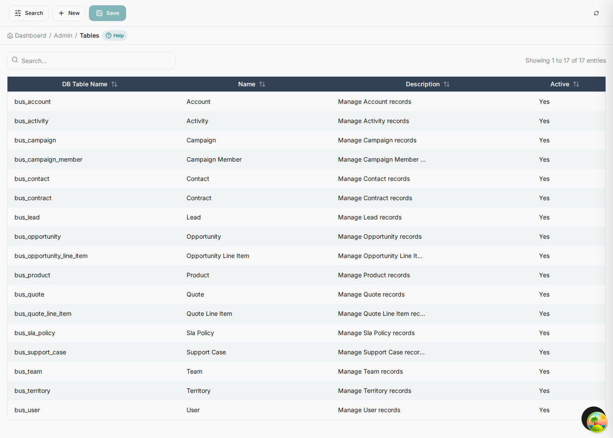
bus_ table per entity in the
model, each with a label and a description the dashboard reuses. The dialog is careful about the
boundary: editing a definition here changes how the application treats a column, not the database
schema — a new column still needs a migration.
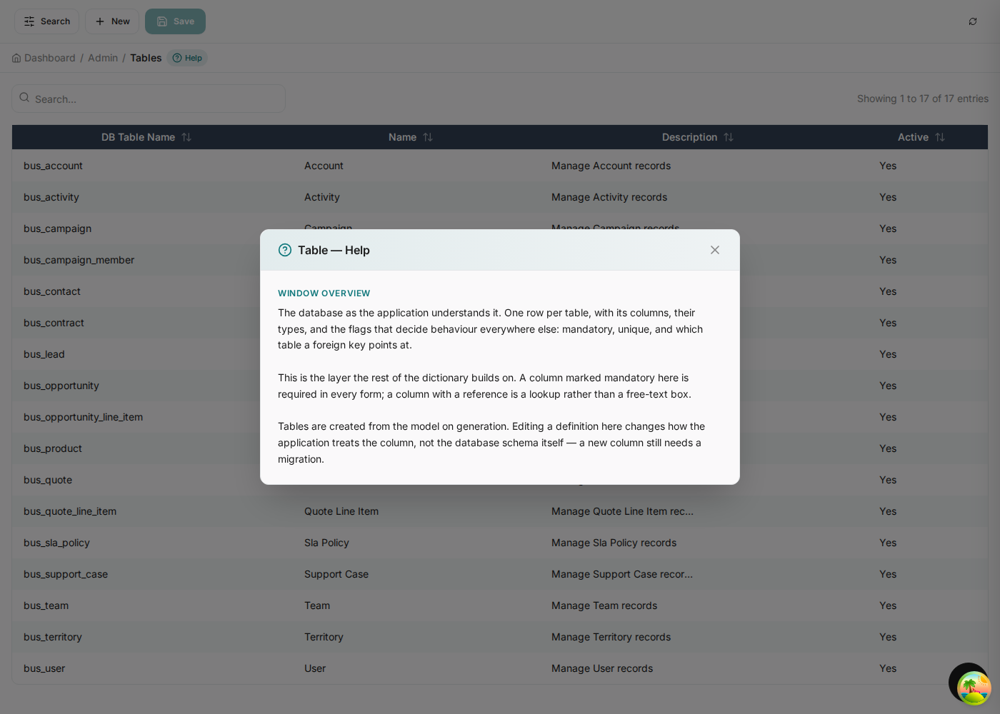
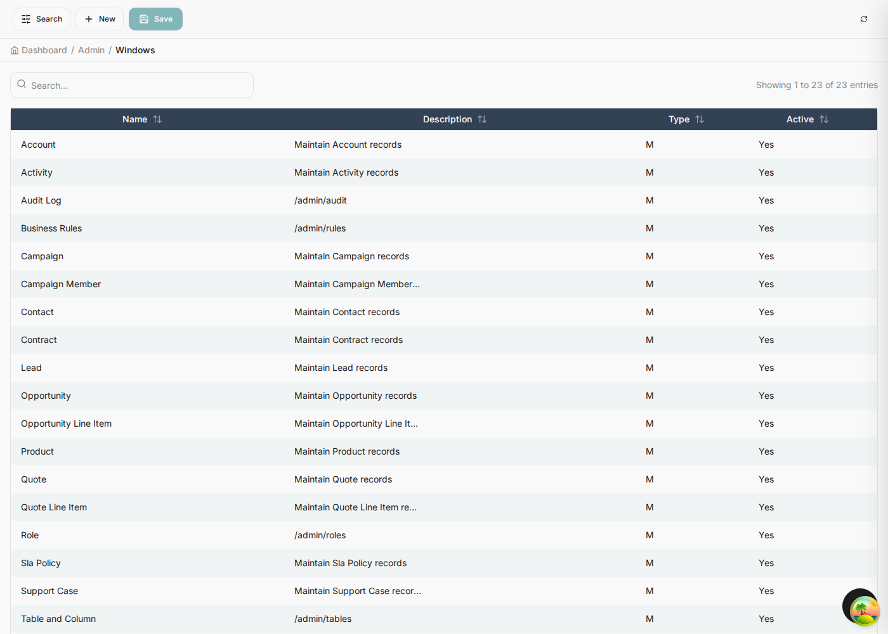
Down a level: window → tab → field
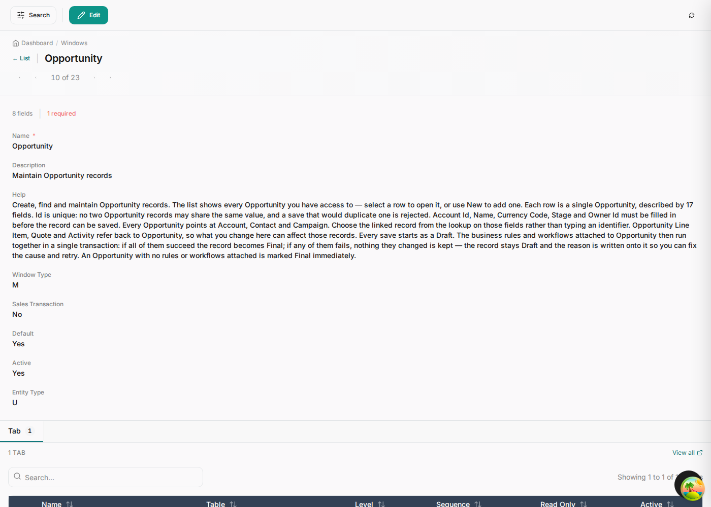
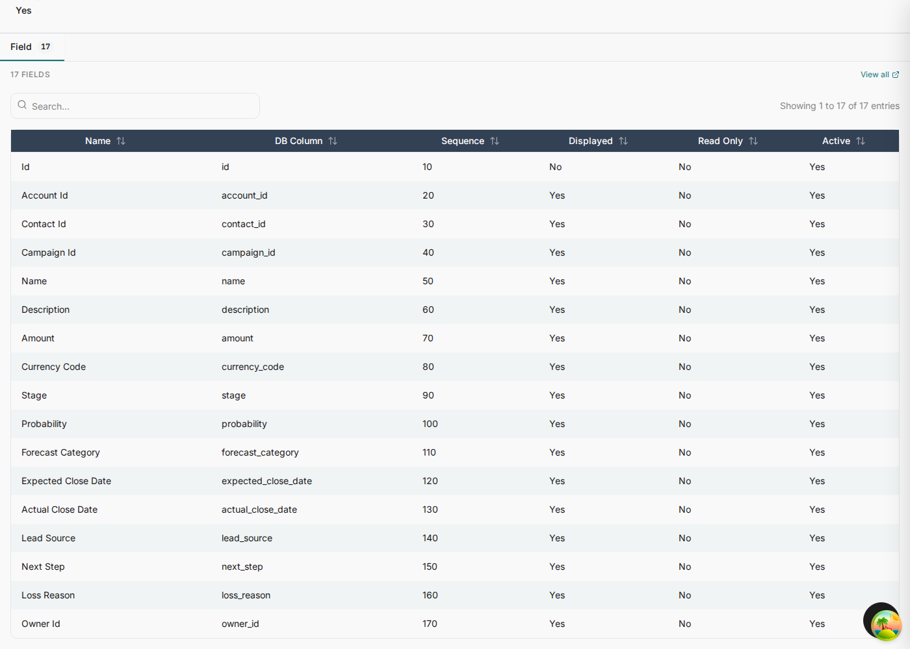
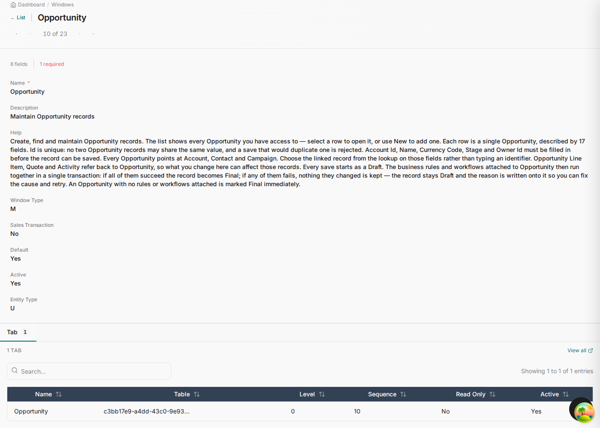
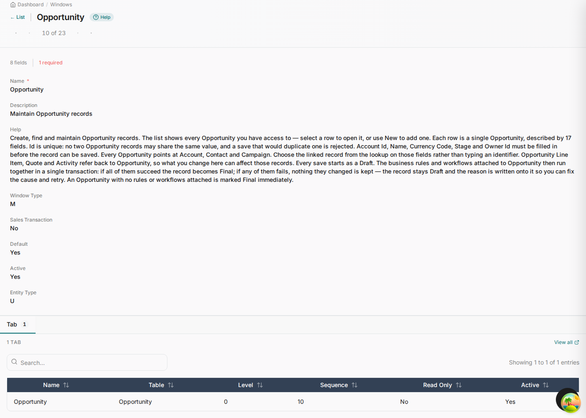
Business Rules
The rules your model declared, plus a validation rule per entity, all live and editable. An operations person can change a threshold without a deploy; the model stays the source of what gets seeded next time.


Workflow Designer
Every definition the model seeded, plus anything built in the app. Definitions marked
from the model are read-only here and rewritten on the next generation; ones built in the
designer carry source: designer and are never touched.


Audit log
One entry per insert, update and delete, written by the same transaction as the change, so the log cannot drift from the data. It is append-only: nothing here can be edited or deleted from the application.

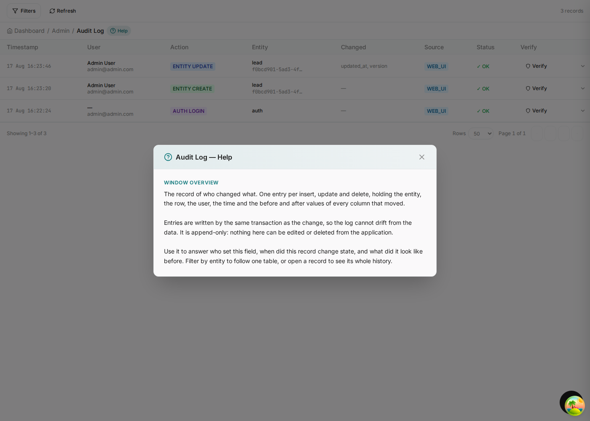
Roles
Access control is generated too. Four roles are seeded, and the guards the state machines declare on
their transitions — [Manager], [Administrator] — resolve against this list
rather than against strings scattered through service code.
[Manager] in the model is a permission check against this row at runtime — which is why
chapter 03's state machines could name roles without anyone wiring them up.

Help, on the dictionary screens too
The six dictionary screens carry their own help, describing what the screen is for and how the pieces relate. It lives in the dictionary like any other help text, so you can rewrite it for your own team.
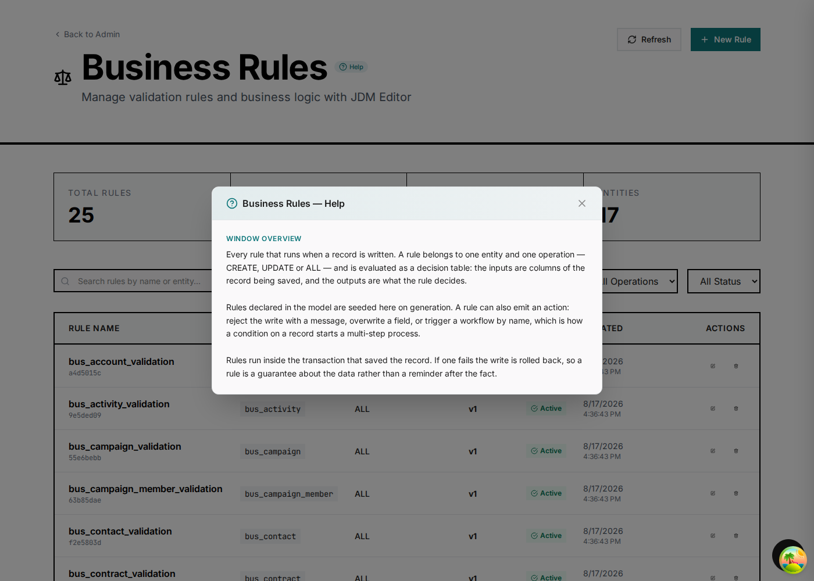
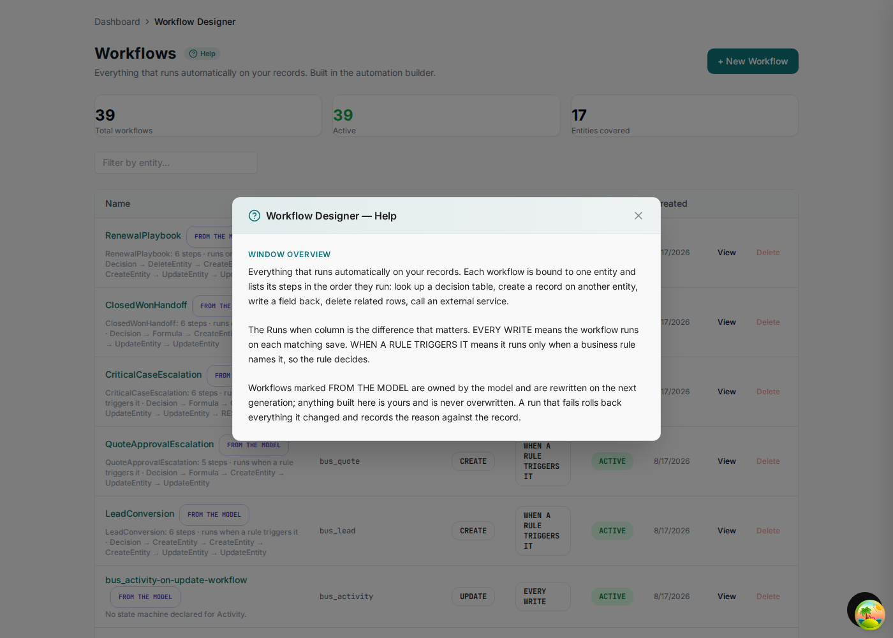
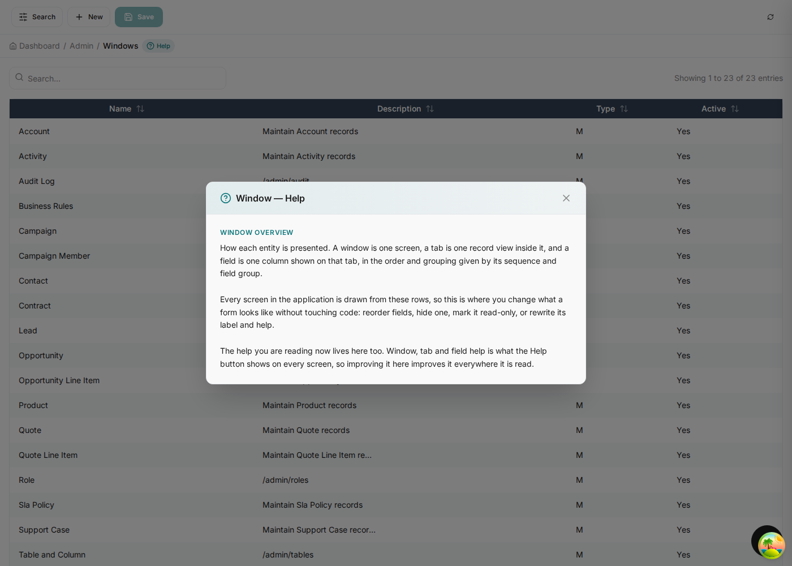
What to change where
| You want to… | Change it in |
|---|---|
| Add a column, an entity or a relationship | The model, then regenerate |
| Reorder or hide a field on a form | Window, Tab and Field |
| Reword a label or its help | Window, Tab and Field |
| Change a threshold in a rule | Business Rules — but put it back in the model before the next generation |
| Add a step to a model workflow | The model. The designer shows it read-only for exactly this reason. |
| Build a workflow this application needs and the model should not own | The designer. It survives regeneration. |
| Grant a role access to a window | Role |
Editing a model-owned rule or workflow in the app works, and the next generation overwrites it. If a
change matters, it belongs in the .mmd. The app is where you tune; the model is where you
decide.